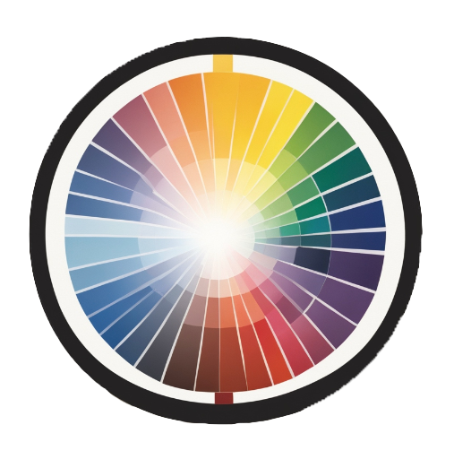

This is my first project, the 'Freestyle Flowinator'
Freestyling is another hobby of mine, and I find it useful to have a random word generator running while doing so
This tool allows for you to specify the time between switching the random word and how many random words to produce.
Once you have input the count of words to produce, and the time between switching, you can press the Flow button to begin
This also includes an inbuilt audio player, where the track will be triggered once the Flow button is clicked
If you like this, please consider reaching out via my email to give feedback or suggestions!/p>
(Or don't. I do not mind, things like this are for all to enjoy, regardless of circumstance)